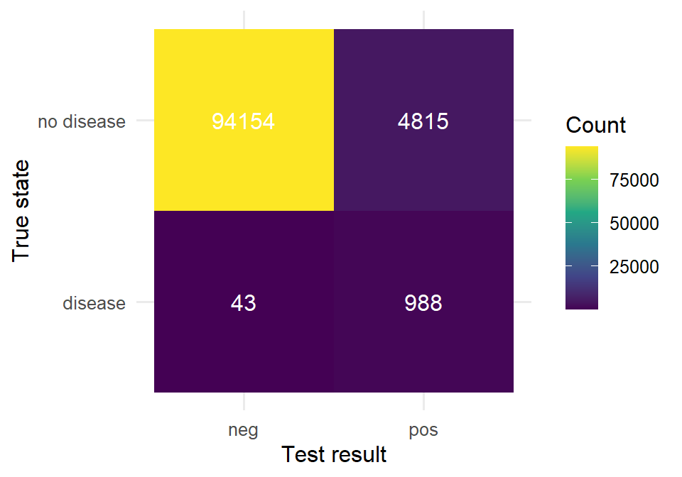
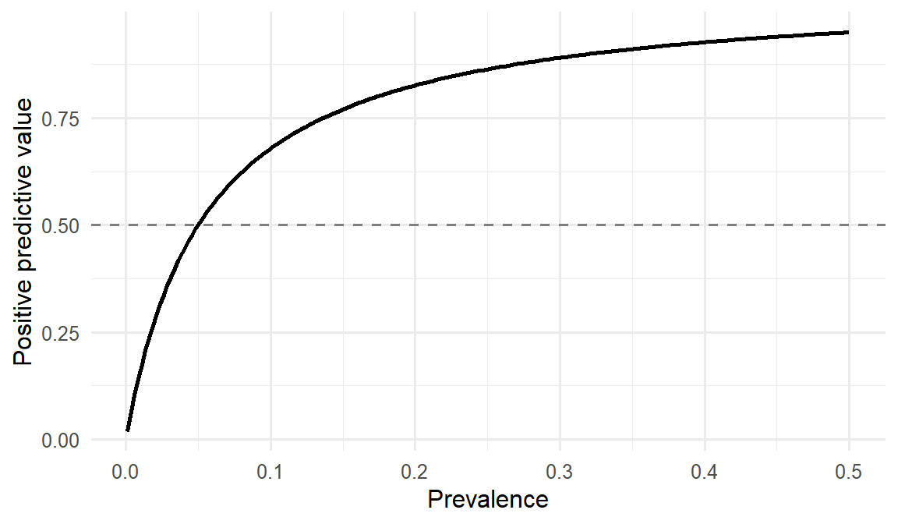

library(tidyverse)
set.seed(42)
theme_set(theme_minimal(base_size = 12))Week 2, Session 2 — Probability, conditional probability, Bayes’ theorem
Course 1 — #courses
Note
Inference labs use the five-step template: Hypothesis → Visualise → Assumptions → Conduct → Conclude.
Learning objectives
- Distinguish marginal, joint, and conditional probability and compute each from a contingency table.
- State Bayes’ theorem and apply it to a medical-testing scenario.
- Simulate a population and recover conditional probabilities by counting.
Prerequisites
Week 1.
Background
Probability is the language for reasoning under uncertainty. In biostatistics, most of the probabilities we care about are conditional — the probability that a patient has a disease given a test result; the probability of survival given a treatment; the probability of an adverse event given a risk factor. The distinction between marginal and conditional probability is the distinction between “how common is X in the population” and “how common is X in a particular subgroup”.
Bayes’ theorem is the rule for flipping a conditional probability. Given P(A|B) and the marginal probabilities P(A) and P(B), it returns P(B|A). In medical testing this lets us move from how often does the test fire when the disease is present (sensitivity) to how likely is disease given a positive test (positive predictive value). The two are routinely confused; Bayes’ theorem is the cure.
The counterintuitive part of Bayes is the role of prevalence. For a test with fixed sensitivity and specificity, PPV rises and falls with the prevalence in the tested population. Screening a very-low-risk population with an imperfect test guarantees that most positives will be false positives, regardless of the test’s quality.
Setup
1. Hypothesis
We are not testing a hypothesis in the Fisherian sense; we are computing a conditional probability. The quantity of interest is the positive predictive value of a test with known sensitivity and specificity in a population of known prevalence.
2. Visualise
Simulate a population of 100,000 people. Prevalence of disease = 1%. Test sensitivity = 95%. Test specificity = 95%.
N <- 100000
prev <- 0.01
sens <- 0.95
spec <- 0.95
pop <- tibble(
id = seq_len(N),
disease = rbinom(N, 1, prev)
) |>
mutate(
test = if_else(disease == 1,
rbinom(N, 1, sens),
rbinom(N, 1, 1 - spec))
)tab <- table(disease = pop$disease, test = pop$test)
tab test
disease 0 1
0 94154 4815
1 43 988as_tibble(tab) |>
mutate(disease = recode(disease, `0` = "no disease", `1` = "disease"),
test = recode(test, `0` = "neg", `1` = "pos")) |>
ggplot(aes(test, disease, fill = n)) +
geom_tile() +
geom_text(aes(label = n), colour = "white") +
scale_fill_viridis_c() +
labs(x = "Test result", y = "True state", fill = "Count")
3. Assumptions
We assume each person is independent, the test’s operating characteristics are fixed, and no selection bias. Real screening has verification bias, spectrum bias, and imperfect gold standards; we are ignoring all of them to isolate the Bayesian calculation.
p_disease <- mean(pop$disease)
p_positive <- mean(pop$test)
p_pos_given_disease <- mean(pop$test[pop$disease == 1])
p_pos_given_no_disease <- mean(pop$test[pop$disease == 0])
tibble(quantity = c("P(D)", "P(T+)",
"P(T+|D)", "P(T+|~D)"),
value = c(p_disease, p_positive,
p_pos_given_disease, p_pos_given_no_disease))# A tibble: 4 × 2
quantity value
<chr> <dbl>
1 P(D) 0.0103
2 P(T+) 0.0580
3 P(T+|D) 0.958
4 P(T+|~D) 0.04874. Conduct
Apply Bayes’ theorem by hand.
ppv_bayes <- (sens * prev) / (sens * prev + (1 - spec) * (1 - prev))
ppv_bayes[1] 0.1610169# By direct counting from the simulation.
ppv_count <- mean(pop$disease[pop$test == 1])
ppv_count[1] 0.1702568Same quantity, two routes. Bayes is algebra on the marginals; simulation is counting from the table. They must agree, within sampling error.
# Sweep prevalence from 0.001 to 0.5 and see PPV change.
sweep <- tibble(
prev = seq(0.001, 0.5, length.out = 200),
ppv = (sens * prev) / (sens * prev + (1 - spec) * (1 - prev))
)sweep |>
ggplot(aes(prev, ppv)) +
geom_line(linewidth = 1) +
geom_hline(yintercept = 0.5, linetype = 2, colour = "grey50") +
labs(x = "Prevalence", y = "Positive predictive value")
5. Concluding statement
With sensitivity = 0.95 and specificity = 0.95, a test applied in a population of prevalence = 0.01 has a positive predictive value of 0.161 — that is, fewer than one in five positive results is a true positive. In a simulated population of 1e+05, the PPV recovered by direct counting was 0.17. Negative predictive value was correspondingly high.
When prevalence is low, even a very accurate test produces mostly false positives. This is why population screening decisions are controversial, and why “my test is 95% accurate” is an incomplete statement.
Anchor this session in an example the audience will recognise — mammography, PSA, COVID rapid testing. The numbers are memorable.
Common pitfalls
- Confusing sensitivity with PPV. P(T+|D) and P(D|T+) are not the same.
- Reporting a test’s “accuracy” without specifying prevalence.
- Assuming independence of repeated tests without checking.
- Treating the prior (prevalence) as negotiable evidence.
Further reading
- Gigerenzer G. Reckoning with Risk.
- Altman DG & Bland JM (1994), Diagnostic tests 2: predictive values.
Session info
sessionInfo()R version 4.5.2 (2025-10-31 ucrt)
Platform: x86_64-w64-mingw32/x64
Running under: Windows 11 x64 (build 26200)
Matrix products: default
LAPACK version 3.12.1
locale:
[1] LC_COLLATE=English_Germany.utf8 LC_CTYPE=English_Germany.utf8
[3] LC_MONETARY=English_Germany.utf8 LC_NUMERIC=C
[5] LC_TIME=English_Germany.utf8
time zone: Europe/Berlin
tzcode source: internal
attached base packages:
[1] stats graphics grDevices utils datasets methods base
other attached packages:
[1] lubridate_1.9.5 forcats_1.0.1 stringr_1.6.0 dplyr_1.2.1
[5] purrr_1.2.2 readr_2.2.0 tidyr_1.3.2 tibble_3.3.1
[9] ggplot2_4.0.3 tidyverse_2.0.0
loaded via a namespace (and not attached):
[1] gtable_0.3.6 jsonlite_2.0.0 compiler_4.5.2 tidyselect_1.2.1
[5] scales_1.4.0 yaml_2.3.12 fastmap_1.2.0 R6_2.6.1
[9] labeling_0.4.3 generics_0.1.4 knitr_1.51 htmlwidgets_1.6.4
[13] pillar_1.11.1 RColorBrewer_1.1-3 tzdb_0.5.0 rlang_1.2.0
[17] utf8_1.2.6 stringi_1.8.7 xfun_0.57 S7_0.2.2
[21] otel_0.2.0 viridisLite_0.4.3 timechange_0.4.0 cli_3.6.6
[25] withr_3.0.2 magrittr_2.0.4 digest_0.6.39 grid_4.5.2
[29] hms_1.1.4 lifecycle_1.0.5 vctrs_0.7.3 evaluate_1.0.5
[33] glue_1.8.1 farver_2.1.2 rmarkdown_2.31 tools_4.5.2
[37] pkgconfig_2.0.3 htmltools_0.5.9